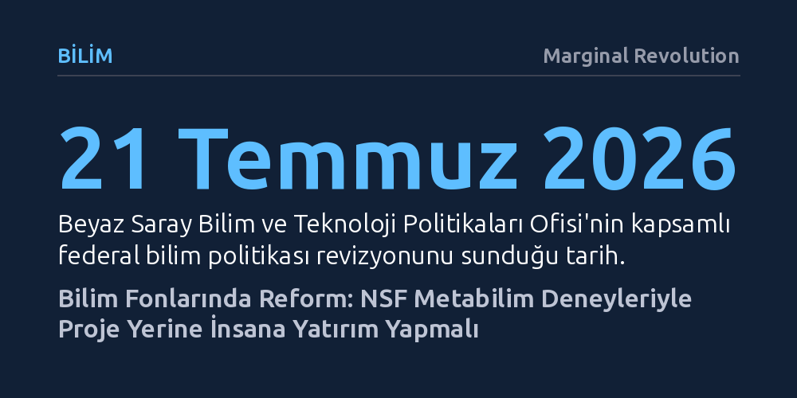

BILIM · Marginal Revolution · 2026-10-18
Matt Faherty'nin araştırması, Ulusal Bilim Vakfı'nın fon dağıtımını metabilim deneyleriyle test ederek projeler yerine doğrudan araştırmacıları desteklemeye yönelmesi gerektiğini ortaya koyuyor. Yeni kurulan Metabilim Ofisi, bilim politikasında İkinci Dünya Savaşı'ndan bu yana planlanan en kapsamlı dönüşüme zemin hazırlayabilir.
Milyarlarca dolarlık bilim fonlarının nasıl dağıtılacağına bürokratik alışkanlıklarla değil, bizzat bilimsel yöntem ve deneylerle karar verilmesi gerektiğini gösteriyor.

Matt Faherty’nin Amerikan Ulusal Bilim Vakfı (NSF) üzerine hazırladığı yeni araştırma, kamu kaynaklı bilim fonlarının dağıtımında köklü bir yöntem değişikliğine gidilmesi gerektiğini savunuyor. Mevcut yapıda hem NSF hem de Ulusal Sağlık Enstitüleri (NIH) gibi devasa kurumlar, milyarlarca dolarlık bütçeleri geleneksel bürokratik değerlendirme süreçleriyle araştırmacılara dağıtıyor. Ancak bu hibelerin bilimsel ilerlemeyi ve yenilikçiliği gerçekten maksimize edip etmediği bugüne kadar nesnel biçimde sorgulanmış değil.
Faherty, federal hükümetin ve fon sağlayıcı kurumların metabilim alanına çok daha fazla kaynak ve mesai harcaması gerektiğine dikkat çekiyor. Bilimin kendi işleyişini, teşvik yapılarını ve kurumsal pratiklerini bilimsel yöntemlerle inceleyen metabilim, fonlama sisteminin kör noktalarını görünür kılmayı amaçlıyor. Hangi mekanizmanın sahada daha iyi sonuç verdiğini tahmin yürütmek yerine kontrollü deneylerle test etmek, kamu kaynaklarının etkinliği açısından vazgeçilmez bir zorunluluk olarak öne çıkıyor.
Raporda üzerinde durulan en somut reform önerilerinden biri, fonlama felsefesinin dar kapsamlı projelerden yetenekli araştırmacıların kendisine kaydırılması. Mevcut proje tabanlı modelde bilim insanları, henüz başlamadıkları çalışmaların adımlarını ve kesin sonuçlarını önceden öngörmeye zorlanıyor. Bu durum araştırmacıları garantili, risk içermeyen ve sıradan konulara yönlendirirken; araştırmacıyı merkeze alan modeller bilim insanına beklenmedik bulguların peşinden gitme ve yüksek riskli hipotezleri sınama özgürlüğü veriyor.
Bunun yanı sıra bilim dünyasını sarsan tekrarlanabilirlik krizine karşı doğrudan replikasyon çalışmalarının fonlanması da öncelikli deney alanları arasında yer alıyor. NSF gibi kurumların bağımsız doğrulama araştırmalarına açık bütçe ayırması, akademik literatürün güvenilirliğini artırmayı hedefliyor. Faherty'ye göre hangi reformun bilimsel çıktıları daha fazla iyileştireceğini anlamanın tek yolu, bu farklı modelleri sahada birbiriyle yarıştıran kontrollü pilot deneyler yürütmek.
Teorik düzeydeki bu reform çağrısı, kurumsal düzeyde ilk karşılığını bulmuş durumda. NSF’nin Eylül 2026’da bir Metabilim Ofisi kurduğunu duyurması, bu yönde atılmış kritik bir adım olarak karşılanıyor. Yeni ofis, bilim fonlarındaki olası yenilikleri geniş ölçekte uygulamadan önce küçük ölçekli deneylerle sınama ve sonuçları ölçme imkânı sağlayacak.
Faherty’nin çalışması tam da bu noktada devreye girerek yeni kurulan ofis için kapsamlı bir yol haritası sunuyor. Rapor, ofisin deneysel araştırma gündemini nasıl belirlemesi gerektiğinden sonuçların hangi başarı metrikleriyle değerlendirileceğine kadar pratik yönlendirmeler içeriyor. Böylece metabilim, soyut bir akademik uğraş olmaktan çıkıp kamu yönetiminin operasyonel bir aracına dönüşüyor.
Federal bilim politikasındaki bu dönüşüm dalgası sadece fon kurumlarıyla sınırlı değil; en üst düzey siyasi mekanizmalarda da güçlü bir karşılık buluyor. Beyaz Saray Bilim ve Teknoloji Politikaları Ofisi (OSTP) Direktörü Michael Kratsios tarafından 21 Temmuz 2026’da açıklanan 'Science: A New Golden Age' başlıklı başkanlık raporu, İkinci Dünya Savaşı’ndan bu yana Amerikan bilim mimarisinde planlanan en kapsamlı yeniden yapılanmayı öngörüyor.
Kapsamlı mülakatlara ve araştırmalara dayanan Faherty, Beyaz Saray raporunun temel çıkarımlarını ve tavsiyelerini kuvvetle desteklediğini belirtiyor. Küresel bilimsel üretkenliğin yavaşladığı ve bürokratik engellerin genç yetenekleri bezdirdiği bir dönemde, federal kurumların kendi yöntemlerini cesurca deneye tabi tutması, Amerikan bilimi için yeni bir altın çağın kapısını aralayabilir.